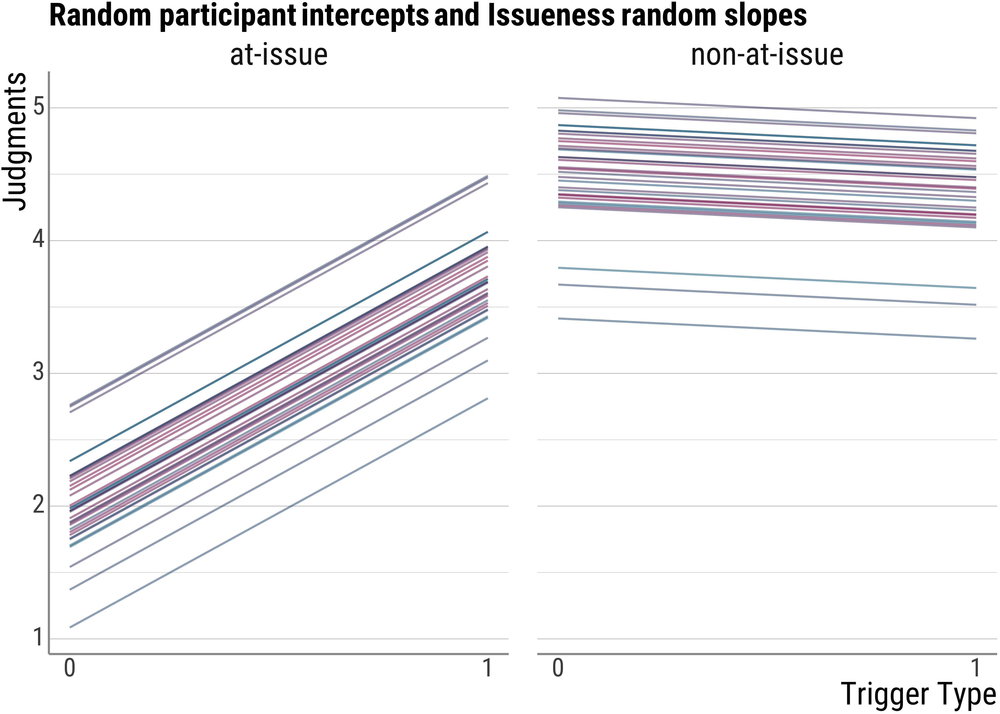

5 Linear Mixed Models
5.1 Previously …
In the last days, we talked about linear models in various instances, like the \(t\)-test, the linear model, and the ANOVA.
For the more complex experimental data that we looked at, we found out that the \(t\)-test just doesn’t cut it.
Then, we also saw there are variance components that are unsystematic from the perspective of our experiment, but which are nonetheless systematic per se.
We saw two cases of these repeated measures with the ANOVA: one related to participants (when a factor is within participants) and one related to items (when a manipulation occurs within items).
With the ANOVA, it was not possible to have a single model that captured both sources of repeated measures at the same time.
Today, we will have a look at a class of models that can do this.
These are called (linear) mixed models.
In the context of these models, these sources of variance are called random effects, because they are related to non-experimental variables.
Let’s first develop an intuition what these models do with the random effects before we dive in deeper.
For familiarity purposes, we will use the data from Chen et al. (2022) again.
d_psp <- read_csv(here("assets", "data", "psp-data.csv")) %>%
filter(trigger_cat != "appo", stage != "Children") %>%
select(id, itemid, trigger_cat, issue, judgment)
d_psp <- d_psp %>%
mutate(trigger_cat_d = if_else(trigger_cat == "hard", 0, 1))
head(d_psp)## # A tibble: 6 × 6
## id itemid trigger_cat issue judgment trigger_cat_d
## <chr> <chr> <chr> <chr> <dbl> <dbl>
## 1 auncqkpvl6b3rp0d3g833vmuh6 gewinnen2 soft at-issue 5 1
## 2 auncqkpvl6b3rp0d3g833vmuh6 schaffen1 soft at-issue 1 1
## 3 auncqkpvl6b3rp0d3g833vmuh6 auch3 hard at-issue 1 0
## 4 auncqkpvl6b3rp0d3g833vmuh6 entdecken1 soft at-issue 5 1
## 5 auncqkpvl6b3rp0d3g833vmuh6 schaffen3 soft at-issue 1 1
## 6 auncqkpvl6b3rp0d3g833vmuh6 cleft3 hard non-at-issue 5 05.2 Before we go on, let’s talk about pooling
# complete pooling
d_psp %>%
lm(judgment ~ 1, data = .) %>%
tidy()## # A tibble: 1 × 5
## term estimate std.error statistic p.value
## <chr> <dbl> <dbl> <dbl> <dbl>
## 1 (Intercept) 3.65 0.0563 64.8 2.02e-287# no pooling
d_psp %>%
mutate(id = factor(as.numeric(factor(id)))) %>%
lm(judgment ~ id - 1, data = .) %>%
tidy() %>%
mutate(p.value = scales::pvalue(p.value))## # A tibble: 33 × 5
## term estimate std.error statistic p.value
## <chr> <dbl> <dbl> <dbl> <chr>
## 1 id1 3.9 0.314 12.4 <0.001
## 2 id2 3.55 0.314 11.3 <0.001
## 3 id3 3.75 0.314 11.9 <0.001
## 4 id4 3.4 0.314 10.8 <0.001
## 5 id5 3.45 0.314 11.0 <0.001
## 6 id6 3.65 0.314 11.6 <0.001
## 7 id7 3.35 0.314 10.7 <0.001
## 8 id8 3.95 0.314 12.6 <0.001
## 9 id9 3.68 0.323 11.4 <0.001
## 10 id10 3.9 0.314 12.4 <0.001
## # … with 23 more rowsQuestion: Why are neither of these models ideal?
You can think of linear mixed models as the happy medium between these two approaches.
While we will not talk about the underlying machinery, we will try to get an intuition about what is happening.
5.3 Random Effects
Using lme4 (Bates et al. 2015), we will fit four models and visualize the outputs to see what the different random effects do.
I will fit four different models below. The predictors (or fixed effects, as they are often called) are the same for all of them, in that the include main effects for at-issueness and trigger type, as well as their interaction.
The only difference will be so-called random effects structure. This allows us to account for a number of systematic variance that is like not due to our experimental manipulations.
Again, this includes by-participant variation (some may be tired or simply do not like our sentences), but a portion of it will also be indirectly related to our predictors.
It is not hard to imagine that some speakers will react more or less strongly to an experimental manipulation than others. If you’ve ever asked more than one person for judgments on a minimal pair, you’ll know what I’m talking about.
Note first that it is not possible to fit a linear mixed model without random effects (i.e., a model that looks similar to the ones we used with the lm() call, just with the call lmer()):
# load the required package
library(lme4)
# fit the model (should fail)
psp_lmm_id <- lmer(judgment ~ issue * trigger_cat, data = d_psp, REML = FALSE)Error: No random effects terms specified in formula
Let’s go through the four models that do include various specifications of the random effects step by step:
- the first one just has by-participant random intercepts. That is, the lines that the model estimates from the data are allowed the start at different heights. But the slopes must be the same between all of them.
- in the second one, we will have random intercepts and also random slopes for the trigger type manipulation. This is to account for the fact that some people may like hard or soft presupposition triggers better than others.
- in the third one, we have random intercepts and random intercepts for at-issueness. Again, some people might be more or less tolerant with this difference.
- In the fourth model, we have random intercepts and random slopes for both trigger type and at-issueness, this is done using the
+to combine the two. - in the final models, we additionally have random slopes for the interaction between the two predictors (as indicated by using the
*.
psp_lmm_id <- lmer(judgment ~ issue * trigger_cat + (1 | id), data = d_psp, REML = FALSE)
psp_lmm_trigger <- lmer(judgment ~ issue * trigger_cat + (trigger_cat | id), data = d_psp, REML = FALSE)
psp_lmm_issue <- lmer(judgment ~ issue * trigger_cat + (issue | id), data = d_psp, REML = FALSE)
psp_lmm_both <- lmer(judgment ~ issue * trigger_cat + (issue + trigger_cat | id), data = d_psp, REML = FALSE)
psp_lmm_int <- lmer(judgment ~ issue * trigger_cat + (issue * trigger_cat | id), data = d_psp, REML = FALSE)## boundary (singular) fit: see help('isSingular')For now, the results of the different models are unimportant. The main point here is to understand what the different random effects structures do with the data.
What we want to know is thus this: How do the fitted lines differ between the models?
Let’s write a function so that we do not have to repeat the code for the plots over and over again. (To make everything a little bit prettier, I’ll also change the colors)
colfunc <- colorRampPalette(c(colors[2], colors[1]))
base_plot <- function(fitted, title) {
d_psp %>%
ggplot() +
facet_wrap(~issue) +
geom_line(data = d_psp, aes(x = trigger_cat_d, y = fitted, group = id, color = id), alpha = .5) +
guides(color = "none") +
scale_color_manual(values = colfunc(length(unique(d_psp$id)))) +
labs(
x = "Trigger Type",
y = "Judgments",
title = title
) +
scale_x_continuous(breaks = c(0, 1))
}Recall what our normal models look like: The lines should actually not be fully opaque, but the are all the same, so they overlap. What our standard (and in this case wrong) model does is to disregard the participant information.
psp_lm <- lm(judgment ~ issue * trigger_cat, data = d_psp)
d_psp$standard_lm <- predict(psp_lm)
base_plot(d_psp$standard_lm, "Standard Regression")Note that even though this model is wrong because it will wrongly estimate the standard errors (and thus our \(p\)-values will be off), the coefficients should all be correctly estimated.
Now let’s turn to the mixed models.
To add the fitted values to the data frame, we can use the predict() function:
d_psp$model_id_fitted <- predict(psp_lmm_id)
d_psp$model_trigger_fitted <- predict(psp_lmm_trigger)
d_psp$model_issue_fitted <- predict(psp_lmm_issue)
d_psp$model_both_fitted <- predict(psp_lmm_both)
d_psp$model_int_fitted <- predict(psp_lmm_int)
head(d_psp)## # A tibble: 6 × 12
## id itemid trigger_cat issue judgment trigger_cat_d standard_lm model_id_fitted
## <chr> <chr> <chr> <chr> <dbl> <dbl> <dbl> <dbl>
## 1 auncqkpvl6b3rp0d3g833vmuh6 gewinnen2 soft at-issue 5 1 3.73 3.69
## 2 auncqkpvl6b3rp0d3g833vmuh6 schaffen1 soft at-issue 1 1 3.73 3.69
## 3 auncqkpvl6b3rp0d3g833vmuh6 auch3 hard at-issue 1 0 2.00 1.96
## 4 auncqkpvl6b3rp0d3g833vmuh6 entdecken1 soft at-issue 5 1 3.73 3.69
## 5 auncqkpvl6b3rp0d3g833vmuh6 schaffen3 soft at-issue 1 1 3.73 3.69
## 6 auncqkpvl6b3rp0d3g833vmuh6 cleft3 hard non-at-issue 5 0 4.51 4.48
## model_trigger_fitted model_issue_fitted model_both_fitted model_int_fitted
## <dbl> <dbl> <dbl> <dbl>
## 1 3.82 3.48 3.65 3.73
## 2 3.82 3.48 3.65 3.73
## 3 1.88 1.75 1.51 1.39
## 4 3.82 3.48 3.65 3.73
## 5 3.82 3.48 3.65 3.73
## 6 4.39 4.70 4.52 4.63Now, let’s get to the plots. Below is the visualization for the random intercept (by participants) only model. As we expected, there is a line for each of the participants, because they are all slightly different from each other. This allows us to account for quite a bit of variance already that in our wrong model above would have looked like unsystematic noise.
base_plot(d_psp$model_id_fitted, "Random participant intercepts only")base_plot(d_psp$model_trigger_fitted, "Random participant intercepts and Trigger random slopes")base_plot(d_psp$model_issue_fitted, "Random participant intercepts and Issueness random slopes")
base_plot(d_psp$model_both_fitted, "Random participant intercepts and Trigger + Issueness random slopes")base_plot(d_psp$model_int_fitted, "Random participant intercepts and Trigger * Issueness random slopes")5.3.1 Let’s have a bit more of a detailed look
To get a sense of what is going on, let’s look at a super simple model again:
mod <- lmer(judgment ~ issue + (1 | id), data = d_psp)Here’s the estimated model for each person. Notice that here the slopes are the same for everybody:
coef(mod)## $id
## (Intercept) issuenon-at-issue
## 2698jqo2b9fbpm7k69oo82c8j5 3.0318409 1.5751218
## 3gkj6ts9s53vtfhk8v1r4d07r1 2.7952214 1.5751218
## 44vjsg96djepi7rsqs9oken6m3 2.9304325 1.5751218
## 4lvielgqtqtdssufsntp22ktr3 2.6938130 1.5751218
## 54blvd1463nfcof4tainpg6q21 2.7276158 1.5751218
## 6hk2ug38419qrom7vcr9jqui64 2.8628269 1.5751218
## 7o47umnslij8c5ggm50k4ofg75 2.6600102 1.5751218
## 8p2a9d7h7hm9031occ2uiuvpo7 3.0656437 1.5751218
## 8v3ac1g6ciqibvqu16me22agn4 2.9131341 1.5751218
## atf56fhfc894vb2cvl7el4ibc0 3.0318409 1.5751218
## auncqkpvl6b3rp0d3g833vmuh6 2.8290242 1.5751218
## c9cuhu3a777bt4j39kum6kp3v6 3.0758502 1.5751218
## cni0v3n4u08lanbc41lvb91nl4 2.8966297 1.5751218
## cr1c4eo2mcvntbj4d7e88o6u96 2.7614186 1.5751218
## ebaji4itu78e23odap7indjt82 2.8290242 1.5751218
## eegen1ic28r6uoh3kr4rkalil1 2.6938130 1.5751218
## ftj7hf1ff73reu9t948dea7lc5 3.3698688 1.5751218
## iha5atv6engbc4g28sriiki7h3 3.4374744 1.5751218
## ikko382of1dkgpdjc5tuhicni0 3.0994465 1.5751218
## lgob6021gj4v1qgeloa75ubo06 2.8966297 1.5751218
## mkf458e7ms0o4fmfi9ueet0il0 2.6600102 1.5751218
## ocbq4ok768sfqi7krh97qiekg3 3.4036716 1.5751218
## ovsei19p9v0hlt1u2eva9mnl82 3.0994465 1.5751218
## p87dj0rkahhluvbrgn5485bsl4 2.2205739 1.5751218
## pgrg7dm45mkd6r00m6iec0nl62 2.7276158 1.5751218
## q9hue6iu5q78a62r3l26563101 1.9839544 1.5751218
## qia3n8stdcdbrgpq6pgrfhuhf4 3.1670520 1.5751218
## rbe3eovtakfqc6bi6hbk7vdv15 2.7276158 1.5751218
## svbr1nj2bfklg6fohe8ofvb3r5 2.6262074 1.5751218
## tf1e0cg09vglistu7suqprqla3 2.9304325 1.5751218
## tn5s5k5495gs8as4bsfkikq8v7 2.4233907 1.5751218
## u51sl2l9h8i37g94h1i5hrolf1 2.7614186 1.5751218
## vbhdv8atm0j8ojg4tr3brde127 3.1670520 1.5751218
##
## attr(,"class")
## [1] "coef.mer"Just the fixed effects:
fixef(mod)## (Intercept) issuenon-at-issue
## 2.8636364 1.5751218Just the random effects, i.e., how much the intercept was shifted up or down for each person:
ranef(mod)## $id
## (Intercept)
## 2698jqo2b9fbpm7k69oo82c8j5 0.16820452644
## 3gkj6ts9s53vtfhk8v1r4d07r1 -0.06841500311
## 44vjsg96djepi7rsqs9oken6m3 0.06679615663
## 4lvielgqtqtdssufsntp22ktr3 -0.16982337291
## 54blvd1463nfcof4tainpg6q21 -0.13602058298
## 6hk2ug38419qrom7vcr9jqui64 -0.00080942324
## 7o47umnslij8c5ggm50k4ofg75 -0.20362616285
## 8p2a9d7h7hm9031occ2uiuvpo7 0.20200731637
## 8v3ac1g6ciqibvqu16me22agn4 0.04949778043
## atf56fhfc894vb2cvl7el4ibc0 0.16820452644
## auncqkpvl6b3rp0d3g833vmuh6 -0.03461221317
## c9cuhu3a777bt4j39kum6kp3v6 0.21221386946
## cni0v3n4u08lanbc41lvb91nl4 0.03299336670
## cr1c4eo2mcvntbj4d7e88o6u96 -0.10221779304
## ebaji4itu78e23odap7indjt82 -0.03461221317
## eegen1ic28r6uoh3kr4rkalil1 -0.16982337291
## ftj7hf1ff73reu9t948dea7lc5 0.50623242579
## iha5atv6engbc4g28sriiki7h3 0.57383800566
## ikko382of1dkgpdjc5tuhicni0 0.23581010631
## lgob6021gj4v1qgeloa75ubo06 0.03299336670
## mkf458e7ms0o4fmfi9ueet0il0 -0.20362616285
## ocbq4ok768sfqi7krh97qiekg3 0.54003521573
## ovsei19p9v0hlt1u2eva9mnl82 0.23581010631
## p87dj0rkahhluvbrgn5485bsl4 -0.64306243201
## pgrg7dm45mkd6r00m6iec0nl62 -0.13602058298
## q9hue6iu5q78a62r3l26563101 -0.87968196155
## qia3n8stdcdbrgpq6pgrfhuhf4 0.30341568618
## rbe3eovtakfqc6bi6hbk7vdv15 -0.13602058298
## svbr1nj2bfklg6fohe8ofvb3r5 -0.23742895278
## tf1e0cg09vglistu7suqprqla3 0.06679615663
## tn5s5k5495gs8as4bsfkikq8v7 -0.44024569239
## u51sl2l9h8i37g94h1i5hrolf1 -0.10221779304
## vbhdv8atm0j8ojg4tr3brde127 0.30341568618
##
## with conditional variances for "id"5.3.2 Model output comparisons
summary(psp_lmm_id)## Linear mixed model fit by maximum likelihood . t-tests use Satterthwaite's method ['lmerModLmerTest']
## Formula: judgment ~ issue * trigger_cat + (1 | id)
## Data: d_psp
##
## AIC BIC logLik deviance df.resid
## 1874.6 1901.6 -931.3 1862.6 651
##
## Scaled residuals:
## Min 1Q Median 3Q Max
## -3.57054 -0.55493 0.14589 0.62245 3.15696
##
## Random effects:
## Groups Name Variance Std.Dev.
## id (Intercept) 0.15236 0.39034
## Residual 0.92704 0.96283
## Number of obs: 657, groups: id, 33
##
## Fixed effects:
## Estimate Std. Error df t value Pr(>|t|)
## (Intercept) 2.00000 0.10117 92.85760 19.768 < 0.00000000000000022 ***
## issuenon-at-issue 2.51579 0.10653 624.29187 23.617 < 0.00000000000000022 ***
## trigger_catsoft 1.72727 0.10600 624.04609 16.294 < 0.00000000000000022 ***
## issuenon-at-issue:trigger_catsoft -1.87942 0.15028 624.16968 -12.506 < 0.00000000000000022 ***
## ---
## Signif. codes: 0 '***' 0.001 '**' 0.01 '*' 0.05 '.' 0.1 ' ' 1
##
## Correlation of Fixed Effects:
## (Intr) issn-- trggr_
## issunn-t-ss -0.521
## trggr_ctsft -0.524 0.498
## issnn-t-s:_ 0.370 -0.709 -0.705cat("####\n\n")## ####summary(psp_lmm_trigger)## Linear mixed model fit by maximum likelihood . t-tests use Satterthwaite's method ['lmerModLmerTest']
## Formula: judgment ~ issue * trigger_cat + (trigger_cat | id)
## Data: d_psp
##
## AIC BIC logLik deviance df.resid
## 1858.7 1894.6 -921.3 1842.7 649
##
## Scaled residuals:
## Min 1Q Median 3Q Max
## -3.59485 -0.52061 0.07376 0.60074 3.17697
##
## Random effects:
## Groups Name Variance Std.Dev. Corr
## id (Intercept) 0.12616 0.35519
## trigger_catsoft 0.24922 0.49922 -0.185
## Residual 0.86123 0.92803
## Number of obs: 657, groups: id, 33
##
## Fixed effects:
## Estimate Std. Error df t value Pr(>|t|)
## (Intercept) 2.000000 0.095093 64.333533 21.032 < 0.00000000000000022 ***
## issuenon-at-issue 2.515429 0.102690 592.123435 24.495 < 0.00000000000000022 ***
## trigger_catsoft 1.727273 0.134131 64.858071 12.877 < 0.00000000000000022 ***
## issuenon-at-issue:trigger_catsoft -1.879065 0.144860 591.648471 -12.972 < 0.00000000000000022 ***
## ---
## Signif. codes: 0 '***' 0.001 '**' 0.01 '*' 0.05 '.' 0.1 ' ' 1
##
## Correlation of Fixed Effects:
## (Intr) issn-- trggr_
## issunn-t-ss -0.535
## trggr_ctsft -0.487 0.379
## issnn-t-s:_ 0.379 -0.709 -0.537cat("####\n\n")## ####summary(psp_lmm_issue)## Linear mixed model fit by maximum likelihood . t-tests use Satterthwaite's method ['lmerModLmerTest']
## Formula: judgment ~ issue * trigger_cat + (issue | id)
## Data: d_psp
##
## AIC BIC logLik deviance df.resid
## 1875.3 1911.2 -929.6 1859.3 649
##
## Scaled residuals:
## Min 1Q Median 3Q Max
## -3.52991 -0.56302 0.13638 0.55042 3.20614
##
## Random effects:
## Groups Name Variance Std.Dev. Corr
## id (Intercept) 0.173402 0.41642
## issuenon-at-issue 0.097873 0.31285 -0.339
## Residual 0.901238 0.94934
## Number of obs: 657, groups: id, 33
##
## Fixed effects:
## Estimate Std. Error df t value Pr(>|t|)
## (Intercept) 2.00000 0.10352 59.04491 19.320 < 0.00000000000000022 ***
## issuenon-at-issue 2.51616 0.11833 88.69901 21.264 < 0.00000000000000022 ***
## trigger_catsoft 1.72727 0.10452 591.18494 16.526 < 0.00000000000000022 ***
## issuenon-at-issue:trigger_catsoft -1.87980 0.14819 591.64714 -12.685 < 0.00000000000000022 ***
## ---
## Signif. codes: 0 '***' 0.001 '**' 0.01 '*' 0.05 '.' 0.1 ' ' 1
##
## Correlation of Fixed Effects:
## (Intr) issn-- trggr_
## issunn-t-ss -0.555
## trggr_ctsft -0.505 0.442
## issnn-t-s:_ 0.356 -0.629 -0.705cat("####\n\n")## ####summary(psp_lmm_both)## Linear mixed model fit by maximum likelihood . t-tests use Satterthwaite's method ['lmerModLmerTest']
## Formula: judgment ~ issue * trigger_cat + (issue + trigger_cat | id)
## Data: d_psp
##
## AIC BIC logLik deviance df.resid
## 1856.7 1906.1 -917.4 1834.7 646
##
## Scaled residuals:
## Min 1Q Median 3Q Max
## -3.68352 -0.56292 0.12466 0.54356 3.21611
##
## Random effects:
## Groups Name Variance Std.Dev. Corr
## id (Intercept) 0.20226 0.44973
## issuenon-at-issue 0.11195 0.33459 -0.672
## trigger_catsoft 0.25540 0.50537 -0.377 0.588
## Residual 0.82998 0.91103
## Number of obs: 657, groups: id, 33
##
## Fixed effects:
## Estimate Std. Error df t value Pr(>|t|)
## (Intercept) 2.00000 0.10564 41.86307 18.933 < 0.00000000000000022 ***
## issuenon-at-issue 2.51532 0.11642 83.47478 21.605 < 0.00000000000000022 ***
## trigger_catsoft 1.72727 0.13342 63.51753 12.947 < 0.00000000000000022 ***
## issuenon-at-issue:trigger_catsoft -1.87895 0.14220 559.23378 -13.213 < 0.00000000000000022 ***
## ---
## Signif. codes: 0 '***' 0.001 '**' 0.01 '*' 0.05 '.' 0.1 ' ' 1
##
## Correlation of Fixed Effects:
## (Intr) issn-- trggr_
## issunn-t-ss -0.658
## trggr_ctsft -0.541 0.518
## issnn-t-s:_ 0.335 -0.614 -0.530cat("####\n\n")## ####summary(psp_lmm_int)## Linear mixed model fit by maximum likelihood . t-tests use Satterthwaite's method ['lmerModLmerTest']
## Formula: judgment ~ issue * trigger_cat + (issue * trigger_cat | id)
## Data: d_psp
##
## AIC BIC logLik deviance df.resid
## 1851.5 1918.8 -910.8 1821.5 642
##
## Scaled residuals:
## Min 1Q Median 3Q Max
## -3.83343 -0.49357 0.14374 0.56197 3.33018
##
## Random effects:
## Groups Name Variance Std.Dev. Corr
## id (Intercept) 0.32132 0.56685
## issuenon-at-issue 0.29742 0.54537 -0.837
## trigger_catsoft 0.67379 0.82085 -0.657 0.858
## issuenon-at-issue:trigger_catsoft 0.40649 0.63757 0.759 -0.802 -0.959
## Residual 0.79588 0.89212
## Number of obs: 657, groups: id, 33
##
## Fixed effects:
## Estimate Std. Error df t value Pr(>|t|)
## (Intercept) 2.00000 0.12067 33.03049 16.5746 < 0.00000000000000022 ***
## issuenon-at-issue 2.51525 0.13694 37.00472 18.3669 < 0.00000000000000022 ***
## trigger_catsoft 1.72727 0.17339 33.03066 9.9617 0.0000000000176434 ***
## issuenon-at-issue:trigger_catsoft -1.87888 0.17806 40.51940 -10.5519 0.0000000000003424 ***
## ---
## Signif. codes: 0 '***' 0.001 '**' 0.01 '*' 0.05 '.' 0.1 ' ' 1
##
## Correlation of Fixed Effects:
## (Intr) issn-- trggr_
## issunn-t-ss -0.766
## trggr_ctsft -0.673 0.693
## issnn-t-s:_ 0.611 -0.746 -0.805
## optimizer (nloptwrap) convergence code: 0 (OK)
## boundary (singular) fit: see help('isSingular')5.4 What do I do about my \(p\)-values?
There is quite a bit of controversy about how to get p-values from linear mixed models.
The approach that I will present here is the (as far as I know) most consersative one.
This works as follows: We compare several models of different complexity and see whether the more restrictive model (i.e., the one with one less estimation to do) and the one that includes our factor of interest differ from each other with respect to how much variance they explain.
If there is one such difference, we can be pretty sure that that factor is significant. If not, then there is no effect.
Let’s go through this step by step. First, we need all the models. In terms of random effects structure, let’s use the most complex one:
And also, let’s finally use all of the data:
d_psp <- read_csv(here("assets", "data", "psp-data.csv"))
head(d_psp)## # A tibble: 6 × 16
## id gender age months age_months_dec stage median_group item itemid
## <chr> <chr> <dbl> <dbl> <dbl> <chr> <chr> <chr> <chr>
## 1 3536fed0235c7b34a33ddf06fb91b390 w 5 1 5.1 Children Older Children schaffen4_at schaffen4
## 2 3536fed0235c7b34a33ddf06fb91b390 w 5 1 5.1 Children Older Children schaffen1_non schaffen1
## 3 3536fed0235c7b34a33ddf06fb91b390 w 5 1 5.1 Children Older Children cleft2_non cleft2
## 4 3536fed0235c7b34a33ddf06fb91b390 w 5 1 5.1 Children Older Children appRel3_non appRel3
## 5 3536fed0235c7b34a33ddf06fb91b390 w 5 1 5.1 Children Older Children appRel9_non appRel9
## 6 3536fed0235c7b34a33ddf06fb91b390 w 5 1 5.1 Children Older Children gewinnen2_non gewinnen2
## trigger trigger_cat issue judgment question_type presentation_order presentation_cat
## <chr> <chr> <chr> <dbl> <chr> <dbl> <chr>
## 1 schaffen soft at-issue 5 wh-Question 1 1st half
## 2 schaffen soft non-at-issue 5 wh-Question 2 1st half
## 3 cleft hard non-at-issue 5 wh-Question 3 1st half
## 4 appRel appo non-at-issue 5 wh-Question 4 1st half
## 5 appRel appo non-at-issue 4 wh-Question 5 1st half
## 6 gewinnen soft non-at-issue 4 Polar Question 6 1st halfpsp_0 <- lmer(
judgment ~ 1 + (issue + trigger_cat | id) +
(issue |
itemid),
data = d_psp,
REML = FALSE,
control = lmerControl(optCtrl = list(maxfun = 1e6), optimizer = "bobyqa")
)
psp_1a <- lmer(
judgment ~ issue + (issue + trigger_cat | id) +
(issue |
itemid),
data = d_psp,
REML = FALSE,
control = lmerControl(optCtrl = list(maxfun = 1e6), optimizer = "bobyqa")
)
psp_1b <- lmer(
judgment ~ trigger_cat + (issue + trigger_cat | id) +
(issue |
itemid),
data = d_psp,
REML = FALSE,
control = lmerControl(optCtrl = list(maxfun = 1e6), optimizer = "bobyqa")
)
psp_1c <- lmer(
judgment ~ stage + (issue + trigger_cat | id) +
(issue |
itemid),
data = d_psp,
REML = FALSE,
control = lmerControl(optCtrl = list(maxfun = 1e6), optimizer = "bobyqa")
)And now let’s compare them. To do this, we use the anova() command:
anova(psp_0, psp_1a)## Data: d_psp
## Models:
## psp_0: judgment ~ 1 + (issue + trigger_cat | id) + (issue | itemid)
## psp_1a: judgment ~ issue + (issue + trigger_cat | id) + (issue | itemid)
## npar AIC BIC logLik deviance Chisq Df Pr(>Chisq)
## psp_0 15 5162.58 5243.81 -2566.29 5132.58
## psp_1a 16 5128.91 5215.56 -2548.45 5096.91 35.6719 1 0.0000000023351 ***
## ---
## Signif. codes: 0 '***' 0.001 '**' 0.01 '*' 0.05 '.' 0.1 ' ' 1anova(psp_0, psp_1b)## Data: d_psp
## Models:
## psp_0: judgment ~ 1 + (issue + trigger_cat | id) + (issue | itemid)
## psp_1b: judgment ~ trigger_cat + (issue + trigger_cat | id) + (issue | itemid)
## npar AIC BIC logLik deviance Chisq Df Pr(>Chisq)
## psp_0 15 5162.58 5243.81 -2566.29 5132.58
## psp_1b 17 5158.68 5250.75 -2562.34 5124.68 7.89444 2 0.019308 *
## ---
## Signif. codes: 0 '***' 0.001 '**' 0.01 '*' 0.05 '.' 0.1 ' ' 1anova(psp_0, psp_1c)## Data: d_psp
## Models:
## psp_0: judgment ~ 1 + (issue + trigger_cat | id) + (issue | itemid)
## psp_1c: judgment ~ stage + (issue + trigger_cat | id) + (issue | itemid)
## npar AIC BIC logLik deviance Chisq Df Pr(>Chisq)
## psp_0 15 5162.58 5243.81 -2566.29 5132.58
## psp_1c 16 5163.66 5250.31 -2565.83 5131.66 0.92021 1 0.33742But that’s a lot of work, I hear you say. Is there a better way? Yes, the afex has a function that will do all of the work for you:
library(afex)
psp_lmm <- mixed(
judgment ~ stage * issue * trigger_cat + (issue + trigger_cat | id) +
(issue | itemid),
data = d_psp,
method = "LRT",
expand_re = TRUE,
REML = FALSE,
check_contrasts = TRUE,
control = lmerControl(optCtrl = list(maxfun = 1e6), optimizer = "bobyqa")
)## Contrasts set to contr.sum for the following variables: stage, issue, trigger_cat, id, itemidsummary(psp_lmm)## Linear mixed model fit by maximum likelihood . t-tests use Satterthwaite's method ['lmerModLmerTest']
## Formula: judgment ~ stage * issue * trigger_cat + (1 + re1.issue1 + re1.trigger_cat1 +
## re1.trigger_cat2 | id) + (1 + re2.issue1 | itemid)
## Data: data
## Control: lmerControl(optCtrl = list(maxfun = 1000000), optimizer = "bobyqa")
##
## AIC BIC logLik deviance df.resid
## 5001.9 5142.7 -2474.9 4949.9 1636
##
## Scaled residuals:
## Min 1Q Median 3Q Max
## -3.32629 -0.53953 0.07995 0.60519 3.07369
##
## Random effects:
## Groups Name Variance Std.Dev. Corr
## id (Intercept) 0.2877350 0.536409
## re1.issue1 0.0265034 0.162799 0.343
## re1.trigger_cat1 0.0241334 0.155349 -0.081 -0.139
## re1.trigger_cat2 0.0314903 0.177455 -0.145 0.669 0.396
## itemid (Intercept) 0.0273183 0.165282
## re2.issue1 0.0098093 0.099042 0.304
## Residual 0.9957573 0.997876
## Number of obs: 1662, groups: id, 56; itemid, 30
##
## Fixed effects:
## Estimate Std. Error df t value Pr(>|t|)
## (Intercept) 3.501566 0.082965 66.375092 42.2052 < 0.00000000000000022 ***
## stage1 -0.024771 0.077262 56.540660 -0.3206 0.7496905
## issue1 -0.539905 0.038623 39.454706 -13.9787 < 0.00000000000000022 ***
## trigger_cat1 -0.236224 0.059691 33.443798 -3.9575 0.0003733 ***
## trigger_cat2 -0.117529 0.061341 35.248683 -1.9160 0.0635043 .
## stage1:issue1 -0.337886 0.034321 59.862353 -9.8449 0.00000000000003945 ***
## stage1:trigger_cat1 -0.126910 0.041823 57.809204 -3.0345 0.0036072 **
## stage1:trigger_cat2 -0.087479 0.043458 58.251925 -2.0129 0.0487513 *
## issue1:trigger_cat1 -0.111251 0.044405 30.756521 -2.5054 0.0177418 *
## issue1:trigger_cat2 -0.232307 0.044934 29.937929 -5.1700 0.00001449595699166 ***
## stage1:issue1:trigger_cat1 -0.091389 0.036723 1310.246456 -2.4886 0.0129475 *
## stage1:issue1:trigger_cat2 -0.126099 0.036727 1326.319222 -3.4334 0.0006144 ***
## ---
## Signif. codes: 0 '***' 0.001 '**' 0.01 '*' 0.05 '.' 0.1 ' ' 1
##
## Correlation of Fixed Effects:
## (Intr) stage1 issue1 trgg_1 trgg_2 stg1:1 st1:_1 st1:_2 is1:_1 is1:_2 s1:1:_1
## stage1 -0.171
## issue1 0.232 -0.037
## trigger_ct1 -0.030 0.006 -0.035
## trigger_ct2 -0.042 0.009 0.164 -0.378
## stage1:iss1 -0.038 0.213 -0.192 0.005 -0.030
## stg1:trgg_1 0.008 -0.040 0.009 -0.144 0.040 -0.044
## stg1:trgg_2 0.012 -0.076 -0.041 0.039 -0.147 0.237 -0.245
## [ reached getOption("max.print") -- omitted 4 rows ]anova(psp_lmm)## Mixed Model Anova Table (Type 3 tests, LRT-method)
##
## Model: judgment ~ stage * issue * trigger_cat + (issue + trigger_cat |
## Model: id) + (issue | itemid)
## Data: d_psp
## Df full model: 26
## Df Chisq Chi Df Pr(>Chisq)
## stage 25 0.1026 1 0.74872743
## issue 25 69.0498 1 < 0.000000000000000222 ***
## trigger_cat 24 22.3172 2 0.000014252140351343 ***
## stage:issue 25 57.6565 1 0.000000000000031213 ***
## stage:trigger_cat 24 15.1527 2 0.00051244 ***
## issue:trigger_cat 24 33.5860 2 0.000000050920357821 ***
## stage:issue:trigger_cat 24 34.5869 2 0.000000030870781952 ***
## ---
## Signif. codes: 0 '***' 0.001 '**' 0.01 '*' 0.05 '.' 0.1 ' ' 1